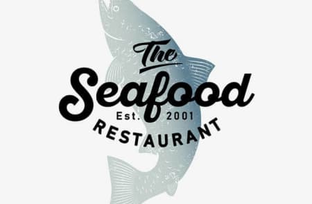

Web
Studio
Студия
Портфолио
Контакты
info@devstudio.com
+38 096 111 11 11
Студия
Портфолио
Контакты
+38 096 111 11 11
info@devstudio.com
Instagram
Twitter
Facebook
LinkedIn
скрытый заголовок
Все
Веб-сайты
Приложения
Дизайн
Маркетинг
Технокряк это современная площадка распространения коронавируса. Компании используют эту платформу для цифрового шпионажа и атак на защищённые сервера конкурентов.
Технокряк
Веб-сайт
Технокряк это современная площадка распространения коронавируса. Компании используют эту платформу для цифрового шпионажа и атак на защищённые сервера конкурентов.
Постер New Orlean vs Golden Star
Дизайн

Технокряк это современная площадка распространения коронавируса. Компании используют эту платформу для цифрового шпионажа и атак на защищённые сервера конкурентов.
Ресторан Seafood
Приложение
Технокряк это современная площадка распространения коронавируса. Компании используют эту платформу для цифрового шпионажа и атак на защищённые сервера конкурентов.
Проект Prime
Маркетинг
Технокряк это современная площадка распространения коронавируса. Компании используют эту платформу для цифрового шпионажа и атак на защищённые сервера конкурентов.
Проект Boxes
Приложение
Технокряк это современная площадка распространения коронавируса. Компании используют эту платформу для цифрового шпионажа и атак на защищённые сервера конкурентов.
Inspiration has no Borders
Веб-сайт
Технокряк это современная площадка распространения коронавируса. Компании используют эту платформу для цифрового шпионажа и атак на защищённые сервера конкурентов.
Издание Limited Edition
Дизайн
Технокряк это современная площадка распространения коронавируса. Компании используют эту платформу для цифрового шпионажа и атак на защищённые сервера конкурентов.
Проект LAB
Маркетинг
Технокряк это современная площадка распространения коронавируса. Компании используют эту платформу для цифрового шпионажа и атак на защищённые сервера конкурентов.
Growing Business
Приложение